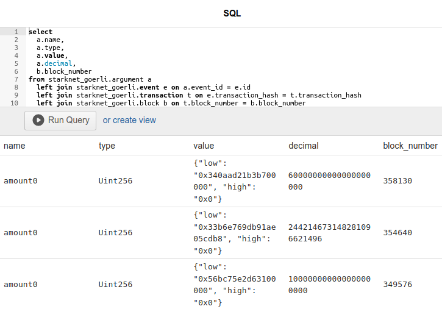
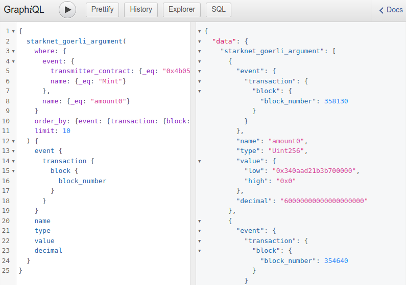
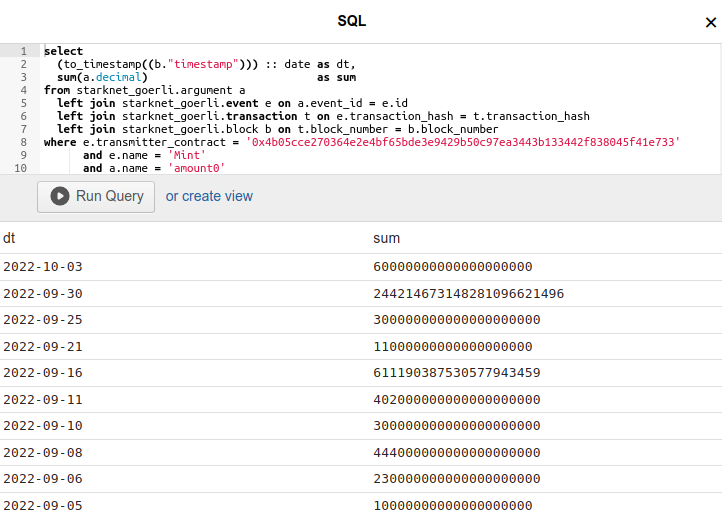
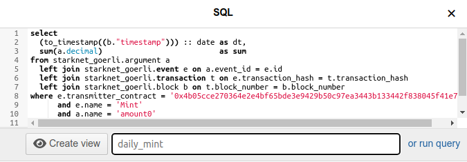
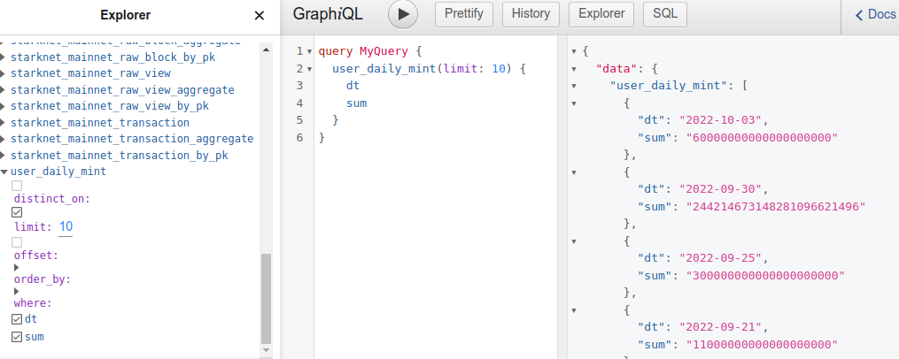
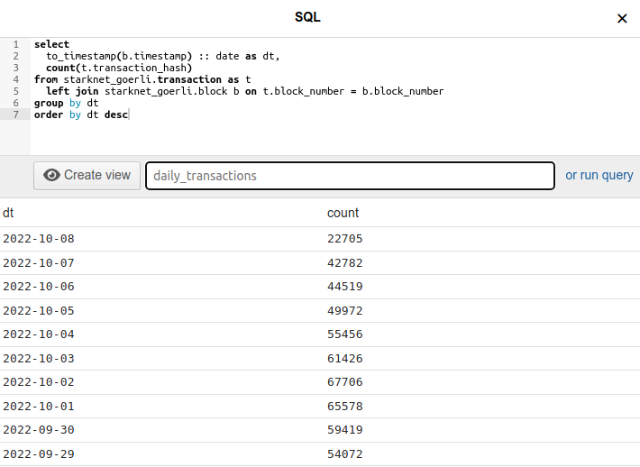
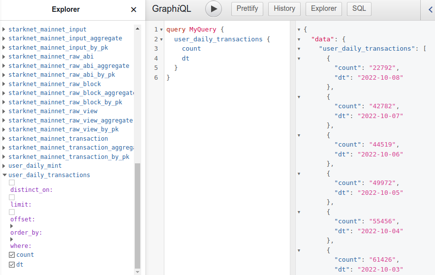

Query blockchain data with SQL
Blockchain data we collect and index is stored in a relational database so it is natural to provide access to it with its native query language SQL.
Compare to GraphQL
We find GraphQL well suited for data exploration, API access and some analysis. GraphQL works well for queries fetching blockchain data with any level of detail, and it lets you join and filter entities. You can use it to sum up values for analysis with aggregation queries. For the majority of use cases in can replace SQL.
Let's go through some queries and compare their implementation in both GraphQL and SQL. We'll see they're equivalent until more complex cases arise which GraphQL cannot handle and we'll have to switch to SQL.
Selects
The following two queries fetch payload arguments named amount0 of
event Mint of contract 0x4b05....
{
starknet_goerli_argument(
where: {
event: {
transmitter_contract: {_eq: "0x4b05cce270364e2e4bf65bde3e9429b50c97ea3443b133442f838045f41e733"},
name: {_eq: "Mint"}
},
name: {_eq: "amount0"}
}
order_by: {event: {transaction: {block: {block_number: desc}}}}
limit: 10
) {
event {
transaction {
block {
block_number
}
}
}
name
type
value
decimal
}
}
The SQL query is as concise as GraphQL except perhaps for the verbose
joins.
select
a.name,
a.type,
a.value,
a.decimal,
b.block_number
from starknet_goerli.argument a
left join starknet_goerli.event e on a.event_id = e.id
left join starknet_goerli.transaction t on e.transaction_hash = t.transaction_hash
left join starknet_goerli.block b on t.block_number = b.block_number
where e.transmitter_contract = '0x4b05cce270364e2e4bf65bde3e9429b50c97ea3443b133442f838045f41e733'
and e.name = 'Mint'
and a.name = 'amount0'
order by b.block_number desc
limit 10;
Open the SQL editor in the web console to try the query.

You may find GraphQL more useful here as it returns easy to consume json output instead of rows returned by SQL.

Aggregations
Let's try aggregation queries to sum up values of our argument
amount0.
select sum(a.decimal) as sum
from starknet_goerli.argument a
left join starknet_goerli.event e on a.event_id = e.id
where e.transmitter_contract = '0x4b05cce270364e2e4bf65bde3e9429b50c97ea3443b133442f838045f41e733'
and e.name = 'Mint'
and a.name = 'amount0';
{
starknet_goerli_argument_aggregate(where: {
name: {_eq: "amount0"},
event: {name: {_eq: "Mint"}, transmitter_contract: {_eq: "0x4b05cce270364e2e4bf65bde3e9429b50c97ea3443b133442f838045f41e733"}}
}) {
aggregate {
sum {
decimal
}
}
}
}
Both queries arrive at the same number
7468354995607923658930301617 which may tell you something.
So far both GraphQL and SQL get the job done.
Complex aggregations
Now for a more meaningful analysis let's try to calculate daily mint
volume of a given smart contract. We would need to sum up all amount0
values of Mint events emitted per day. We determine date by
timestamp fields of blocks that contains transactions with our
events, and would need to round them up to dates.
Alas, this is not possible with the GraphQL aggregation queries we have
available. But SQL does it well with its functions and the aggregation
keyword group by.
select
(to_timestamp((b."timestamp"))) :: date as dt,
sum(a.decimal) as sum
from starknet_goerli.argument a
left join starknet_goerli.event e on a.event_id = e.id
left join starknet_goerli.transaction t on e.transaction_hash = t.transaction_hash
left join starknet_goerli.block b on t.block_number = b.block_number
where e.transmitter_contract = '0x4b05cce270364e2e4bf65bde3e9429b50c97ea3443b133442f838045f41e733'
and e.name = 'Mint'
and a.name = 'amount0'
group by dt
order by dt desc
limit 10;
Returns a table you can interpret and perhaps make a chart out of.

Views
You can use the full power and flexibility of SQL in the web console and observe the results in the output table. But can you consume these results as easily as you do the ones from GraphQL? Which returns json and can be called via http. Yes you can, with the help of views which can turn your SQL select statements into GraphQL queries.
Enter SQL select statement of your query into the web console editor.
But instead of Run Query switch to create view, give it a name then
Create view. We'll persist your query as a database view and make it
available as a GraphQL query node. Note its name will be prefixed with
user_ to distinguish it from the existing entities.

You can find this new query user_daily_mint in the Explorer and run it
just like any other GraphQL query.

The query can also be called via API and its results can be easily consumed as json.
curl https://hasura.dev.summary.dev/v1/graphql --data-raw '{"query":"{user_daily_mint {dt sum}}"}'
Examples
Let's look at a couple of examples that show how SQL can be used to analyse blockchain data, then can be turned into persistent GraphQL queries to be consumed via our API.
Daily transaction count
This SQL select counts total transactions per day.
Note the familiar rounding of block.timestamp to date which we use to
group by.
select
to_timestamp(b.timestamp) :: date as dt,
count(t.transaction_hash)
from starknet_goerli.transaction as t
left join starknet_goerli.block b on t.block_number = b.block_number
group by dt
order by dt desc
With this select we create daily_transactions view in the web console's
SQL editor...

... to find user_daily_transactions node in GraphQL Explorer.

And call the query with http API. Results of such statistical queries can be used to construct charts.
curl https://hasura.dev.summary.dev/v1/graphql --data-raw '{"query":"{user_daily_transactions {dt count}}"}'
Top functions
This SQL select counts the number of smart contract function invocations and sorts them by the this count to show the ones called the most.
select
t.function,
count(t.function) ct
from starknet_goerli.transaction t
group by t.function
order by ct desc;
GraphQL query created from this select user_top_functions...
{
user_top_functions(limit: 5) {
function
ct
}
}
... returns 5 most popular functions.
{
"data": {
"user_top_functions": [
{
"function": "__execute__",
"ct": "5558963"
},
{
"function": "execute",
"ct": "1414980"
},
{
"function": "constructor",
"ct": "978904"
},
{
"function": "anonymous",
"ct": "763224"
},
{
"function": "initialize",
"ct": "322249"
}
]
}
}
Try it via http API.
curl https://hasura.dev.summary.dev/v1/graphql --data-raw '{"query":"{user_top_functions {function ct}}"}'
The above examples show that you can use SQL queries which can be rather complex, to aggregate over any data you may be interested in.
In most cases no separate indexer process is needed to interpret your data. If however you want to do something that SQL, even with custom views cannot, you can query for specific data with GraphQL then consume the results by your own software which will interpret it.